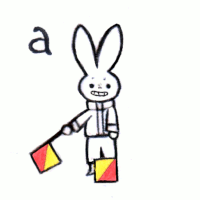
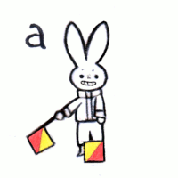

Flag semaphore is a way of communicating at a distance by using hand flags. Information, such as the letters of the alphabet, numerals, etc, are encoded by the position of the flags. At sea, the Oscar flag acts as a signaling flag (on land, it's the Papa flag).
The display motions for the latin alphabet flag semaphore are circular, based on an early semaphore design (popham semaphore) consisting of a 9 m (30 ft) vertical pole with two movable 2.4 m (8 ft) arms fixed to the pole by horizontal pivots at the ends (one in the middle of the pole, the other at the top).
To start signaling letters, signal J. To start signaling numerals, signal the hand flag position for numerals. To request permission to start a transmission, signal the "attention" signal(which doubles as the error signal). The one receiving the signal uses the "ready to receive a signal" flag position, which consists of raising the two flags overhead, then to drop them to the rest position (only once). The one receiving the signals ends the transmission with the same "ready to receive" flag signal. The one receiving the signal can then reply with the "attention" signal to make a reply. At night lighted wants replace the hand flags. It's also possible to signal using your arms only, but signals are easier to read with flags.
Hand flag semaphore positions
![A & 1 (rabbit with right arm at 7-8 oclock, and left arm at 6 oclock), B & 2 (rabbit with right arm at 9 oclock and left arm at 6 oclock), C & 3 (rabbit with right arm at 10-11 oclock, and left arm at 6 oclock), D & 4 (rabbit with right arm at 12 oclock, and left arm at 6 oclock), E & 5 (rabbit with right arm at 6 oclock and left arm at 1-2 oclock), F & 6 (rabbit with right arm at 6 oclock and left arm at 3 oclock), G & 7 (rabbit with right arm at 6 oclock and left arm at 4-5 oclock), H & 8 (rabbit with right arm at 7-8 oclock and left arm at 9 oclock), I & 9 (rabbit with right arm position at 7-8 oclock and left arm at 10-11 oclock), J & Letters Start (rabbit with right arm at 12 oclock and left arm at 3 oclock), K & 0 (rabbit with right arm at 7-8 oclock and left arm at 12 oclock), L (rabbit with right arm at 7-8 oclock and left arm at 1-2 oclock), M (rabbit with right arm at 7-8 oclock and left arm at 3 oclock), N (rabbit with right arm at 7-8 oclock and left arm at 4-5 oclock), O (rabbit with left arm at 10-11 oclock and right arm at 9 oclock), P (rabbit right right arm at 9 oclock and left arm at 12 oclock), Q (rabbit with right arm at 9 oclock and left arm at 1-2 oclock), R (rabbit with right arm at 9 oclock and left arm at 3 oclock), S (rabbit with right arm at 9 oclock and left arm at 4-5 oclock), T (rabbit with right arm at 10-11 oclock and left arm at 12 oclock), U (rabbit with right arm at 10-11 oclock and left arm at 1-2 oclock), V (rabbit with right arm at 12 oclock and left arm at 4-5 oclock), W (rabbit with right arm at 1-2 oclock with left arm at 3 oclock), X (rabbit with right arm at 1-2 oclock and left arm at 4-5 oclock), Y (rabbit with right arm at 10-11 oclock and left arm at 3 oclock), Z (rabbit with right arm at 4-5 oclock and left arm at 3 oclock), Space & Rest (rabbit with arms down, crossed one over the other), Error & Attention (rabbit with right arm at 10-11 oclock and left arm at 1-2 oclock in one position, then down with the right arm at 7-8 oclock and left arm at 4-5 oclock), Cancel & Ignore Previous Signal (rabbit with right arm at 10-11 oclock and left arm at 4-5 oclock), # & Numbers Start (rabbit with right arm at 12 oclock and left arm at 1-2 oclock), Ready to Receive (position 1 both arms up, position 2 both arms down](../media/content/2024_semaphore.jpg) 

![An image features a bird signaling the two flag positions for the letter A: the bird is holding a red flag in their right hand at 9 oclock, and a white flag in their left hand at 7-8 oclock. Next to it, is the same bird holding flags in a new position, with the right hand holding the red flag at 7-8 oclock and the left hand holding the white flag at 1-2 oclock. Another image features a bird signaling the three flag positions for the letter HO: the bird is holding a red flag in their right hand at 9 oclock, and a white flag in their left hand at 3 oclock. Next to it, is the same bird holding flags in a new position, with the right hand holding the red flag at 12 oclock and the left hand holding the white flag at 6 oclock. Finally, the last position is the right hand holding the red flag at 10-11 oclock and the left hand holding the white flag at 1-2 oclock. The last image is a graphic of an example of stroke order for the Japanese characters A and HO.](../media/content/2024_japanese_semaphore.jpg) Japanese Semaphore Wikipedia Page
Japanese Semaphore Wikipedia Page
The Japanese devised their own semaphore system adapted to fit their writing system which has way more characters than the Latin alphabet.
Most characters require two flag positions to complete.
Some require three.
When signaling the motion describes the angles of the brush strokes used when writing, it also takes the order of the strokes into account.